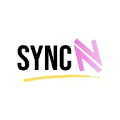
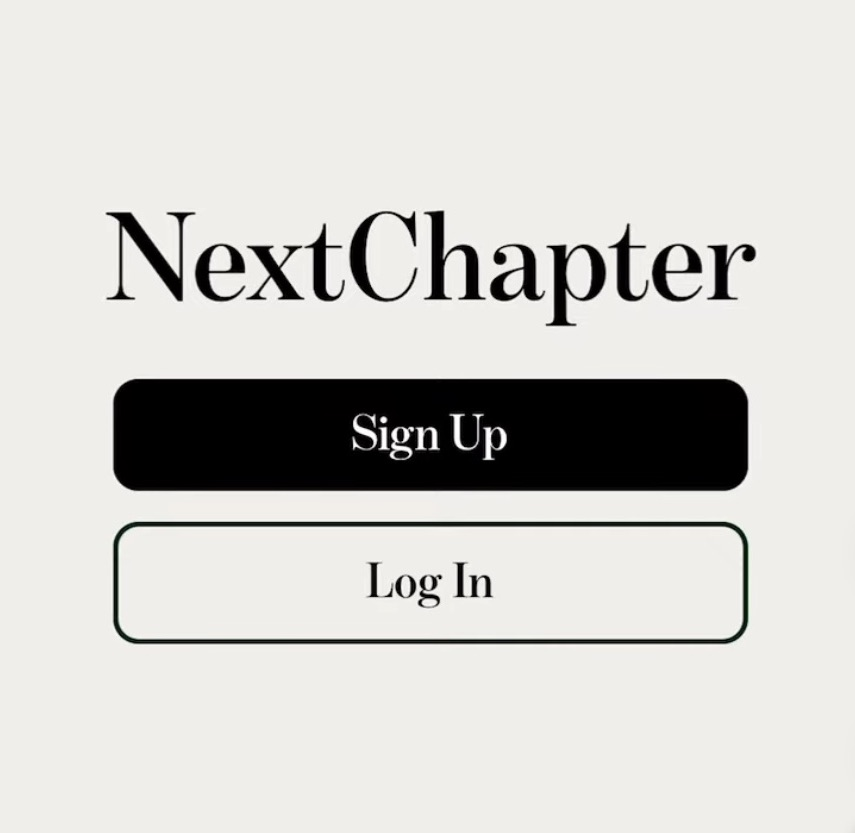

SyncN - Full Stack Engineering Intern
SyncN is a mobile application designed to personalize fitness and nutrition recommendations around the menstrual cycle. The goal of the app is to help individuals optimize their workouts and wellness routines by aligning them with their cycle phases, supported by research insights and user feedback.
As part of the engineering team, my role centered on building the systems that powered personalized fitness and nutrition recommendations. I developed the core logic that adapted workouts and meal suggestions around the menstrual cycle, ensuring the recommendations were research-driven and supportive for users. To make these features fast and scalable, I optimized backend performance with Firestore queries and modular logic using FastAPI and Google Cloud Functions. I also shipped key features with FlutterFlow and Firebase, including personalized dashboards and data syncing flows, while collaborating closely with the founder to align engineering priorities with user feedback and product goals.
Python ● Firebase ● Flutterflow ● FastAPI ● GCP
CRUXO - Data Analysis Intern
CRUXO is an e-commerce startup based in Prague focused on delivering data-driven insights to optimize retail decision-making. As a Data Analysis Intern, I contributed to a basket analysis feasibility study with three other students.
My role in this project involved streamlining data preparation pipelines to analyze the potential effectiveness of using basket analysis. I engineered automated Python workflows capable of processing over one million records, reducing preparation time and enabling faster experimentation. Alongside this, I improved debugging workflows by resolving defects across internal data and visualization tools, which directly supported product teams in their analyses.
Python ● Pandas ● Matplotlib ● Jupyter Notebook
Can't Sleep
My piece is an interactive sketch inspired by the final segment of holding death close by Brazilian artist enorê, which resonated with me through its haunting use of dialogue and exploration of sleep as a possible metaphor for death.
While enorê’s work removes agency from the viewer, I wanted to play with the illusion of choice, using the familiar language of video game prompts to evoke a similar sense of helplessness. The user is asked a simple question: “Go to sleep for the night?” Though “YES” appears to be the correct choice, each click leads to increasingly unsettling messages. Choosing “NO” offers no relief either, only curt dismissal.
Inspired by the anxiety-inducing mechanics of games like Minecraft and Stardew Valley, the sketch traps the player in a looping limbo, aiming to replicate the unsettling, uncertain atmosphere of holding death close through a minimalist yet emotionally charged interaction.
JavaScript ● HTML ● CSS ● OpenProcessing
NextChapter
 View DemoNextChapter is a social media platform designed to help readers stay motivated and engaged by connecting them with book clubs tailored to their interests and pace.
Rather than simply focusing on book discovery, NextChapter emphasizes community through interactive, book-club-style discussions that encourage completion and shared reflection. The platform aims to solve common reading challenges—like lack of motivation or fear of spoilers—by creating a space where readers can track progress, engage with others mid-read, and find clubs that match their taste.
Built with React Native/Expo, Firebase for authentication, and the Google Books API for book data, NextChapter offers a seamless, community-driven reading experience.
JavaScript ● React Native ● Expo ● Firebase ● Google Books API
Elderly Monitoring - Machine Learning

This project addressed the problem of detecting which room an elderly individual is in based solely on data from environmental gas sensors without relying on intrusive methods like video monitoring or wearable devices. The goal was to determine whether such passive sensing could feasibly be used to support independent living for the elderly.
Using a dataset collected over one week from sensors placed in five different rooms of an elderly person’s home, I developed machine learning classification models to predict the current room based on environmental data, primarily carbon dioxide (CO₂) levels, along with other gas sensor readings. With careful preprocessing and model selection, I was able to achieve high classification accuracy across most room types.
Python ● Jupyter Notebook ● Scikit-Learn